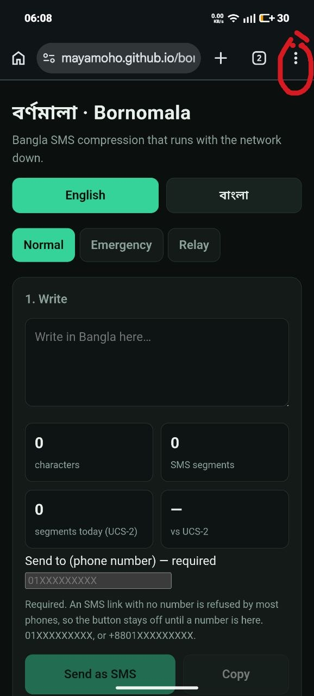
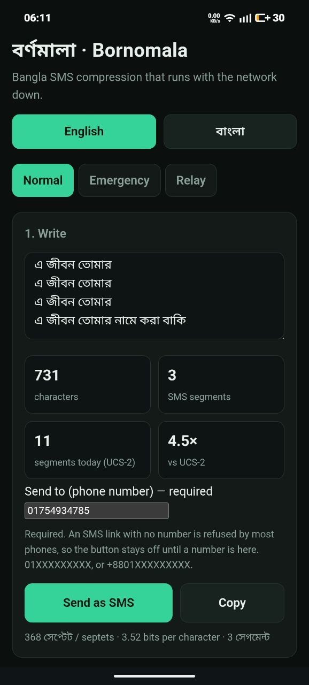
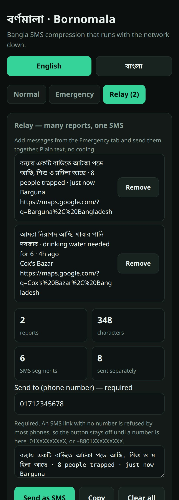
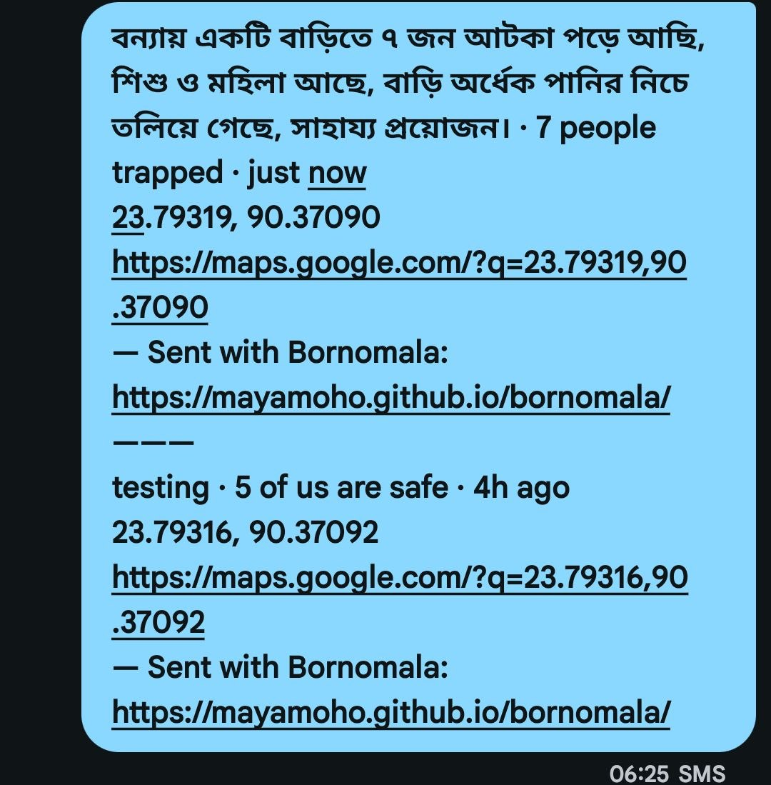
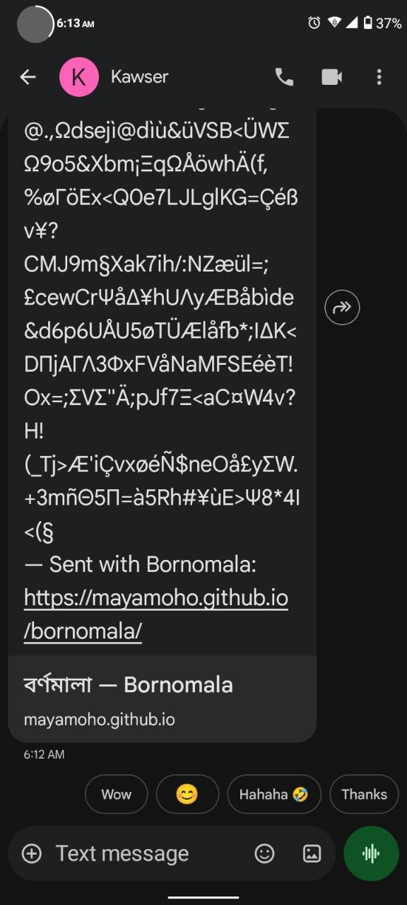

July Hackathon 2026 · Track A — Crisis Tech · solo entry
বর্ণমালা · Bornomala
An offline Bangla SMS app with three jobs: compress ordinary messages so 5× more fits in one text, compose emergency reports any phone can read, and let one volunteer relay many households' reports in a single SMS.
Everything runs on the phone. No server, no internet, no account, no message ever leaves the device except through your own SMS app.
mayamoho.github.io/bornomala · github.com/Mayamoho/bornomala
01 — the night the network went
In July 2024 the state cut the mobile internet.
Broadband went dark too. What kept working was the oldest part of the phone network: voice calls and text messages. People fell back to texting.
Every crisis tool assumes it can build a new network. In July, nobody could.
And it costs twice as much to text in Bangla.
Text messages were built around an old character set that only covers English. Write one Bangla letter and the whole message switches to a heavier format:
160characters per segment, English
70characters per segment, Bangla
2.3×more expensive, per message
More segments means more cost, more retries, and more failures on a congested network — exactly when SMS is the only channel left.
02 — why not just a Bluetooth mesh app?
A mesh reaches the room. A text reaches your mother.
Half of crisis tech is offline mesh messengers — Bluetooth or Wi-Fi passing messages phone to phone. Good idea, three conditions attached:
| Bluetooth mesh app | Bornomala | |
|---|---|---|
| Who needs the app | both people, installed before the disaster | only the sender |
| How far it reaches | about 100 metres | the whole country |
| Who it can reach | strangers nearby who also installed it | any phone that can receive a text |
| Can it call 999 | no | yes, one tap |
So Bornomala does not build a network. It uses the one that already reaches everybody — text messages and voice calls — and makes it cheaper.
03 — how the compression works
The app guesses the next letter, so it costs less to write down.
- A small Bangla language model ships inside the app — 1.7 MB, learned from millions of lines of ordinary Bangla, before anyone downloads it.
- At every letter it predicts what is likely to come next. The better the guess, the fewer bits are needed to record the answer. Common Bangla becomes very cheap.
- Those bits are then written in characters that SMS considers "cheap English", so the message travels in the 160-character lane instead of the 70-character one.
- Your phone's own SMS screen sends it. Nothing goes through us, because there is no server.
আমরা পাঁচজন নিরাপদ আছি, ঢাকা → B*?TΞ9(9Id'Θb
The receiver's app runs the same model backwards and gets the sentence back, letter for letter.
04 — tab one: Normal
Write Bangla, watch it shrink, send it.
- Write in Bangla. Four counters move as you type: how many characters, how many messages it costs after compressing, how many it would cost today, and how much you saved.
- The compressed message appears underneath, ready to send.
- Send opens your phone's normal SMS screen with the number and message already filled in. The number is required — a text link with no number silently does nothing on most phones, so the button stays off rather than pretending to work.
- Reading one you received: paste the code and the Bangla comes back. Paste the whole text message — signature line, map link and all — and it still finds the code inside.
- Anything shared into the app from another app lands here automatically.
05 — the honest problem, and tab two
A survivor does not have the app.
Compressing only works if both sides have the app — the same trap the mesh projects fall into. So this tab uses none of it. It sends plain Bangla words any phone can display, and it will not send until the report is actually useful:
- What is happening — in your own words. Required.
- A ready-made sentence — 32 of them, grouped as status, need, danger and help offered, with the six most urgent on icon buttons. Each has blanks you fill: how many people, how urgent, blood group, water depth, shelter space.
- Where you are — pick a district, or use your live location. Required.
- How long ago — just now, or up to 31 hours. Required.
- Nine official national numbers — 999, 1090, 102, 16263, 333, 109, 1098, 16430, 106 — one tap to call, one tap to text with your message already written. Calls work with no internet at all.
A preview shows the exact words that will leave your phone. Volunteers and coordinators install the app; the people they are helping never have to.
06 — tab three: Relay
One volunteer, forty households, one SMS.
A volunteer at a shelter collects status from the families around them. Each report is added from the Emergency tab with one tap, and the whole queue goes out as a single message.
- The list shows every report, each one removable.
- Counters show how many messages this batch costs — and how many it would have cost sending them one by one. That second number is the whole point.
- Send to one number, or copy the batch out.
This is not a small saving. When the towers are jammed, one message that gets through beats forty stuck in a queue.
07 — measured, not claimed
Tested on 5,000 messages the model had never seen.
| Bangla characters in one text | Fits in a single text | |
|---|---|---|
| Bornomala | 361 | 100.0% |
| What every phone does today | 70 | 98.2% |
| Ordinary compression (gzip) | 53 | 99.5% |
5.15× more Bangla in every text message than any phone in the country sends today. Ordinary compression does worse than doing nothing — it has no idea what Bangla looks like, and messages this short never repay the overhead.
Every 50th line of the corpus, held out of training · npm run bench
08 — graceful degradation
Each layer below has a floor.
No internetinstall it once and it opens forever after, with no connection
No mobile datatexts and calls still go, over 2G
No GPSpick your district instead of using live location
No network at allshow the QR code and let the phone beside you photograph it
Your location always travels twice — as a map link and as plain numbers beside it — because the numbers still make sense on a phone that cannot open the link.
No accounts, no tracking, no ads, nothing sent to us. The app is 92 kB and the language model is a separate 1.7 MB, so the Emergency and Relay tabs work before it finishes loading.
09 — running on real phones
Installed and sent, on two Android handsets.







Live at mayamoho.github.io/bornomala · bilingual, switchable mid-message · 81 automated checks across three suites · MIT licensed, with the benchmark and the model training tools in the repo.
One number worth remembering: 5.15× more Bangla in every SMS, on the network that was left.
github.com/Mayamoho/bornomala — a star helps this reach the people who need it.